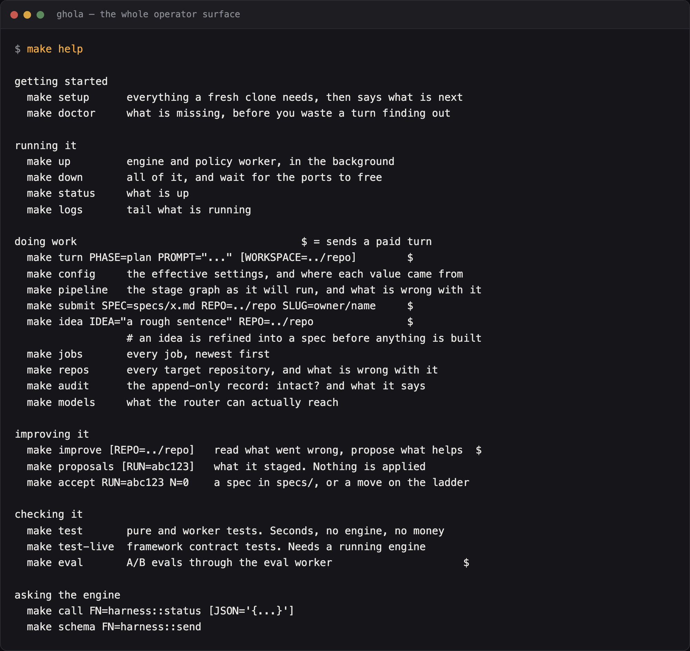
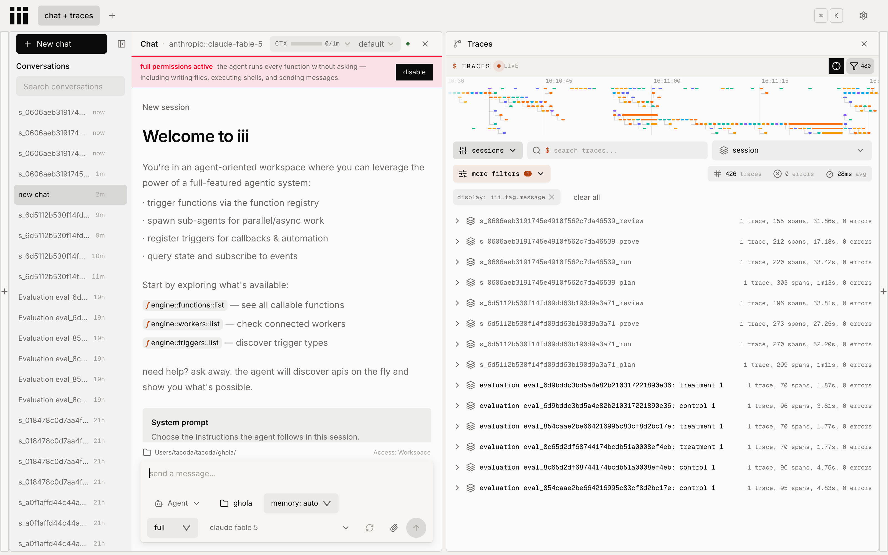

ghola
A spec goes in, a pull request comes out, and nothing merges itself. ghola composes thirty-one iii workers into a factory that plans, writes, proves, reviews, and commits through your repository's own hook. It registers no tools of its own. What it adds is the stage graph, the briefs, and a ladder that puts every rule further out of reach of the thing it constrains.
iii is the framework. ghola is the conventions that wire it together.
iii ships the turn loop, the tools, git worktrees, the GitHub client, the approval gate, durable queues, and the console. The rule here is that if a worker does it, ghola does not, which is why there is so little of ghola to read. I moved two more things out into workers of their own: ladder for the constraint and capability ladder, and audit-log for the append-only record. A starter kit whose best ideas are locked inside it is a worse starter kit.
Both are moving back in as copies, so a clone ships the whole thing rather than three repositories to keep in step. That is a shipping convenience and not the end state: each one becomes a worker in its own right again later.
The whole lifecycle runs
A spec becomes a plan, a diff, a proof, a review, a commit through your repository's own hook, and a pull request. Comment on it and the job reworks.
The forge is a setting
GitHub and local both ship, and a third is a file in
forges/. Local needs no account and no token: the request for
review is a file in the repository.
Configuration, not a fork
The flow of work, the development process, how much a person watches.
Three files and a prompts directory, and make config prints
every effective value with where it came from.
It reads its own record
The improve lane reads the audit log and the job records, not anyone's memory of the week. It drops any proposal it cannot trace to evidence, rather than repairing it.
Extension is two mechanisms
Drop a Python file in actions/, guards/ or
predicates/ and ghola finds it by filename. Or name any
function id on the bus and write it in whatever language you like.
Once you clone it, it is yours
No upgrade path, on purpose rather than because I ran out of time. Nothing here will migrate your configuration, because a starter kit that owned it would not be yours.
Step two is optional, and step three is the one that costs money.
ghola runs on built-in defaults with an empty settings/. The
shortest honest path points it at a scratch repository with no forge at all.
The first pull request then costs one turn and no GitHub account.
1. clone the repo git clone … && cd ghola && make setup 2. add config and scripts edit settings/, drop files in actions/ 3. tell it to do work make submit SPEC=specs/x.md REPO=../repo
# repos.local.toml, and no account, no token, no slug [repos."/Users/you/code/scratch"] forge = "local" base = "main"
flowchart LR
spec(["a spec"]) --> plan --> run --> prove --> review --> commit
commit -- "your hook refused" --> run
commit -- "your hook accepted" --> pr(["a pull request"])
pr --> you(["you"])
you -- "a comment" --> run
you -- "a merge" --> landed(["landed"])
classDef edge fill:#1A100A,stroke:#A4470F,color:#E8A33D
classDef stage fill:#23150C,stroke:#6E2E13,color:#E7C982
classDef gate fill:#3A2112,stroke:#E7C982,color:#E7C982
class spec,pr,landed edge
class plan,run,prove,review,commit stage
class you gate
make doctor checks your
tools, the harness pin, your key, and your gh login. Look there
first when a job fails and nothing says why.
A constraint has a rung: the mechanism that carries it.
Writing a rule down is rung zero, and rung zero enforces nothing. Each rung above it puts the same rule further out of reach of what it constrains. The interesting question about a rule is not whether the agent agrees with it, but which mechanism still stops it on a bad day.
Capability climbs the other way
A constraint withholds, and gets stronger as it moves out of the agent's reach. A capability grants, and gets stronger as it reaches further. Both are primitives of the same shape, and both are served by the same worker.
The two ladders join at rung 1, the grant, which is
the sum of the capabilities that reached a phase minus everything a constraint
took back. ladder::list answers both sides at once, and the
ladder worker serves the whole promote, demote, add and remove
lifecycle, not ghola.
iii trigger ladder::list
iii trigger ladder::move --json '{"id":"no-secrets","move":"carry","at":"delivery"}'
A dial, not a switch.
"Dark factory" is a useful phrase and a bad setting. Nobody wants a system where no human sees anything, and nobody wants to approve every read either. The level is a dial, and a stage may override it, because run and review want different answers.
| level | a person answers | refuses without asking |
|---|---|---|
| manual | every call | nothing |
| attended | every write | reads run |
| supervised | only what a rule marks ask | the ladder, deterministically |
| dark | nothing | the ladder, and ask degrades to refuse |
An ask never becomes an
allow, at any level. An unattended factory reading "ask"
as "yes" has answered a question nobody put. The default is
supervised.
One terminal and one console. There is no third surface.
make is the whole operator surface. The $ column
marks every target that sends a paid turn, because a command that spends money
should say so before you run it.

While a job is up, the picture worth having open is the iii console. Each phase is one traced session, named for the job and the phase. The span count beside it is every tool call that phase made.

What ghola does not do.
Every tool's documentation says what it does. I put the limitations page first in the reading order instead. Deciding against this cheaply and early costs you less than finding these out in week two. None of it is a promise to fix, and some of it is on purpose.
- Nothing merges itself. No configuration removes the pull request. The gate is not a setting, so there is nothing here to turn off.
- No upgrade path. Clone it and it is yours. Want a later change? Read the diff and take the parts you want.
- No CLI.
makeis the whole operator surface. Every target is four lines of shell, and you can read all of them. - No HTTP surface of its own. The iii console is the interface. A dashboard of ours would be a second thing to maintain and a worse trace view.
- The harness pin is load-bearing. On 1.8.7 the engine honors a
pre-triggerhook'sdeny. On 1.8.1 it ignored that deny and ran the call anyway, so a ladder mounted there looks wired and enforces nothing.